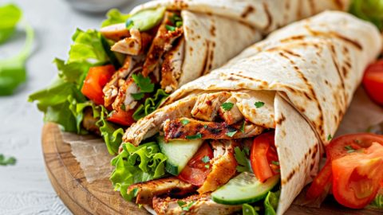

Shawarma

Shawarma is a popular Middle Eastern street food made by stacking thin slices of marinated meat (usually chicken, beef, or lamb) on a vertical rotisserie, which slowly turns and cooks the meat evenly. As the outer layer cooks, it is shaved off into thin strips and served hot. The marinade usually includes spices like cumin, paprika, turmeric, garlic, and sometimes yogurt or vinegar, giving the meat a rich, smoky, and tangy flavor.
It is commonly served in pita bread, wraps, or flatbreads, stuffed with the shaved meat along with vegetables such as lettuce, onions, tomatoes, pickles, and often drizzled with tahini, garlic sauce, or hummus. Shawarma has become a global favorite because of its bold flavors, juicy meat, and versatility, making it both a quick street snack and a hearty meal.
How To Make Shawarma
Ingredients
- Chicken (thighs or breast, boneless, skinless – 500g to 1kg)
- Yogurt (½ cup)
- Lemon juice (2 tbsp)
- Olive oil (2 tbsp)
- Garlic (6 cloves, minced)
- Ginger (1 tbsp, grated)
- Ground cumin (1 tsp)
- Ground coriander (1 tsp)
- Paprika (1 tsp)
- Turmeric (½ tsp)
- Cayenne pepper / chili powder (½ tsp, optional)
- Salt (1 tsp, adjust to taste)
- Black pepper (½ tsp)
- Pita bread or flatbread
- Onion (sliced)
- Tomato (sliced)
- Cucumber or pickles
- Lettuce or cabbage (shredded)
- Fresh parsley or mint (optional)
- Garlic sauce (toum) or tahini or yogurt sauce
- Optional: hummus
Steps
- Marinate the meat: Mix yogurt, lemon juice, olive oil, garlic, ginger, and spices (cumin, coriander, paprika, turmeric, cayenne, salt, pepper). Coat chicken well, cover, and refrigerate for at least 2–6 hours (overnight best).
- Cook the meat: Heat a pan, grill, or oven. Cook marinated chicken until golden brown and fully cooked, then slice thin strips.
- Prepare fillings: Slice onion, tomato, cucumber/pickles, and shred lettuce or cabbage.
- Make sauce: Blend garlic with oil and lemon juice (for toum) or mix yogurt with garlic, lemon, and tahini.
- Assemble: Warm pita bread, spread sauce, add chicken strips, top with veggies, parsley/mint, and extra sauce. Roll tightly.
< Return HOME